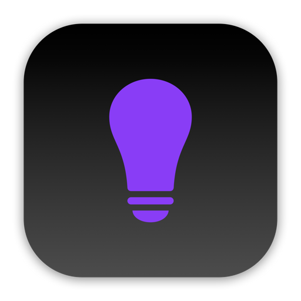
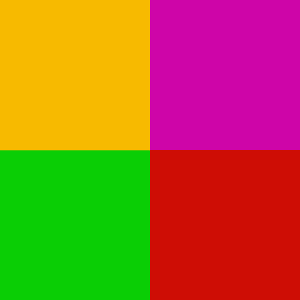
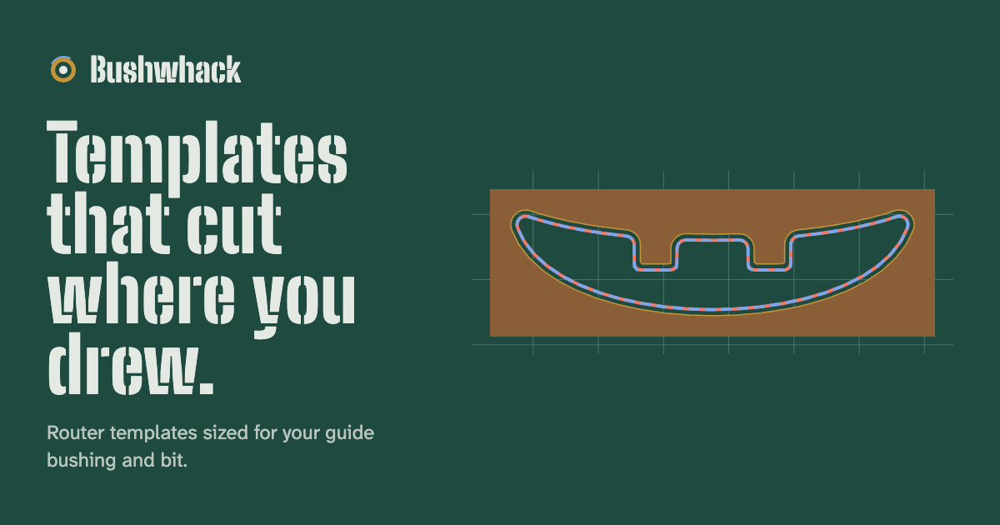
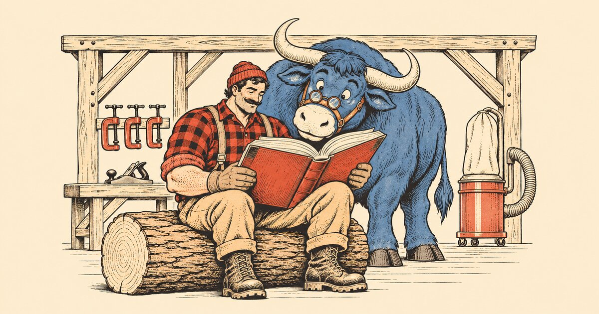
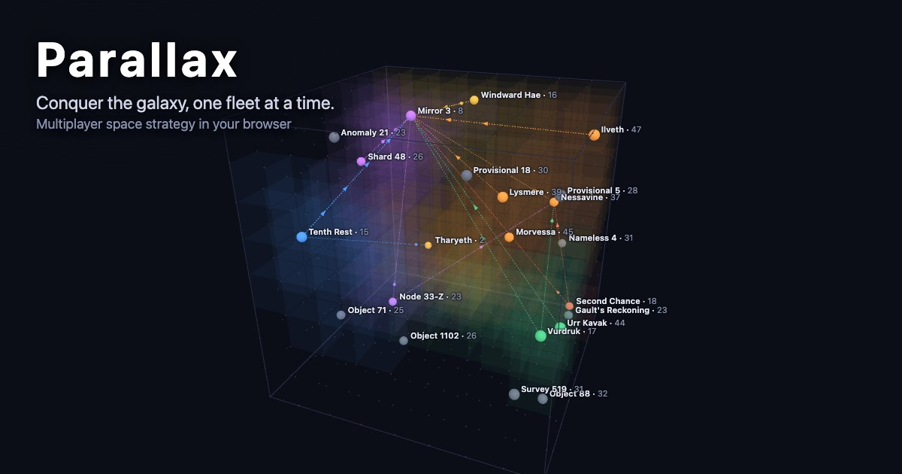
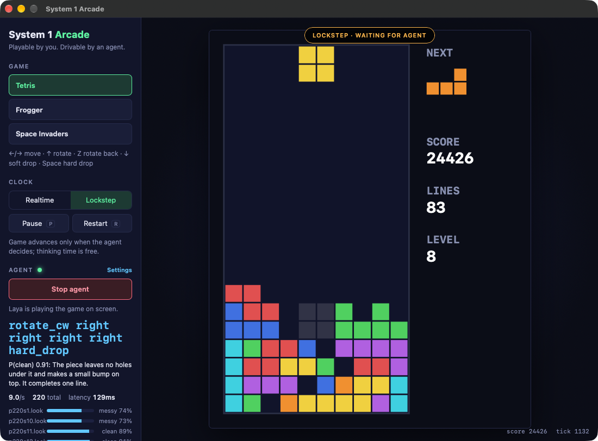
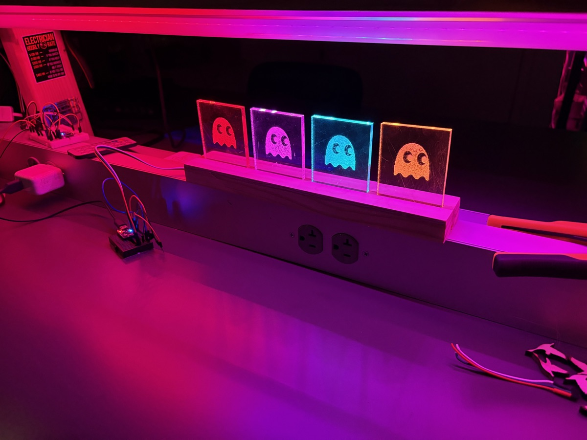
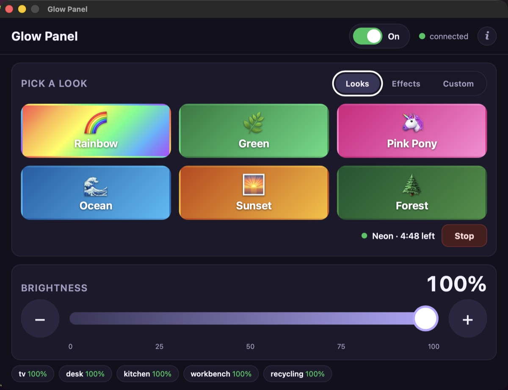
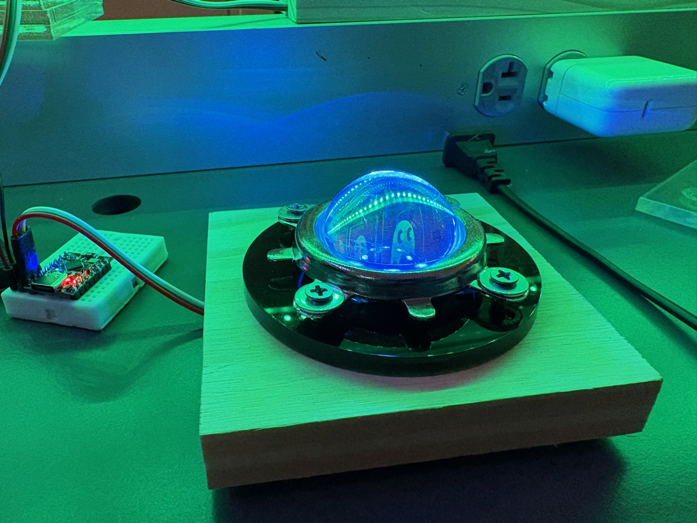

Mac apps
Changeover and Curator
Two Mac apps for Plex. Changeover turns a shelf of DVDs into a Plex library: put a disc in, and it works out the film, rips it, files it and ejects it. Curator shows what Plex just added and where each file lives.


Flaschen Taschen and Pixel Art Gallery
Flaschen Taschen turns a Mac into a network-controlled RGB pixel display, and ft-swift drives the LED installations at Sequoia Fabrica. Pixel Art Gallery turns photos into pixel art and sends it to those displays.
Web
ShortLinks and Portiko
ShortLinks started as a way to try out passkeys: short links with campaigns, UTM analytics and a QR code for each link, signed in with a passkey only. Portiko grew out of that passkey code. It is a passkey-first identity provider you run yourself, with libraries that sign people in to your sites. ShortLinks moves onto Portiko next.


Dust Almanac
Which wood dusts cause asthma, skin allergies or cancer? Plain-language, sourced hazard information for 52 woods, and how to protect yourself in the shop.
Games and System 1


System 1 Arcade
A desktop app for macOS, Windows and Linux where System 1 decision models such as Laya play three classic arcade games through the same controller a person uses, showing each decision as it is made.
LED builds

GlowKitchen
An ESP32-C3 controller for LED strips around the workshop. Six themes, an IR remote, and MQTT control for Home Assistant. It remembers its settings through a power cut, and in the evening it swells gently on the hour as a reminder of the time.

GlowPanel
The control panel for GlowKitchen, running on the Raspberry Pi workstations in the workshop. Big theme buttons and a big brightness slider, usable by a child without instructions, plus effect presets and a custom effect builder. Also runs on the Mac.

GlowLamp
A ring of eight LEDs under a glass dome that slowly blends between colors. WiFi is set up through a captive portal, and the firmware updates itself from GitHub releases.
Agent skills
Skills for Claude Code and other coding agents, the ones I use most while building everything above.
-
Issues
A repo-local bug tracker: an issues/ folder of markdown tickets, with a plan, implement and review workflow.
npx skills add brennanMKE/IssuesSkill -
Mac Release
Ship a Mac app outside the App Store: Developer ID signing, notarization, a DMG and Sparkle updates.
npx skills add brennanMKE/MacReleaseSkill -
Mac Security
Build Mac apps and tools that work with TCC permissions, code signing, the App Sandbox, launchd and removable media.
npx skills add brennanMKE/MacSecuritySkill -
Xcode Build
Build and test with xcodebuild from an agent without ever touching signing certificates, and diagnose signing failures.
npx skills add brennanMKE/XcodeBuildSkill -
Xcode Cleanup
Tidy a newly created Xcode project: minimal file headers and no leftover template metadata.
npx skills add brennanMKE/XcodeCleanupSkill -
Swift Guidance
Modern Swift: concurrency, logging, actor isolation, SwiftUI conventions and performance.
npx skills add brennanMKE/SwiftGuidanceSkill -
ESP32 Guidance
Proven ESP32 patterns from real projects, including the Glow builds: timing, WiFi, logging and hardware quirks.
npx skills add brennanMKE/ESP32GuidanceSkill